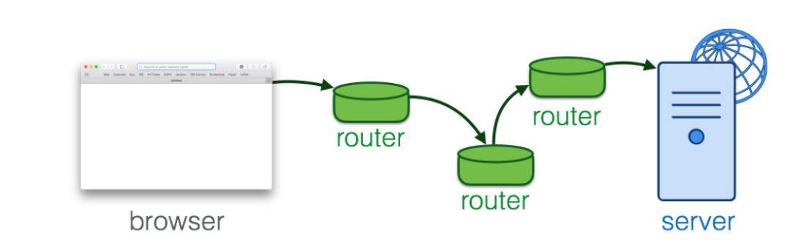
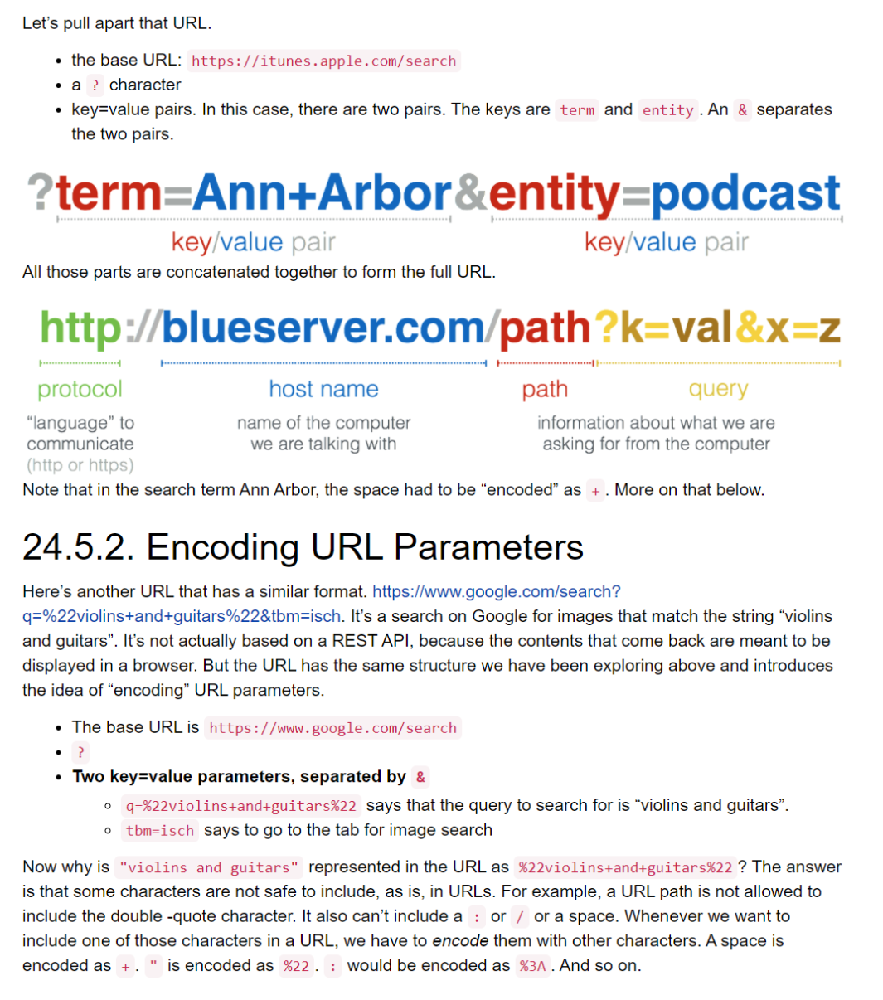
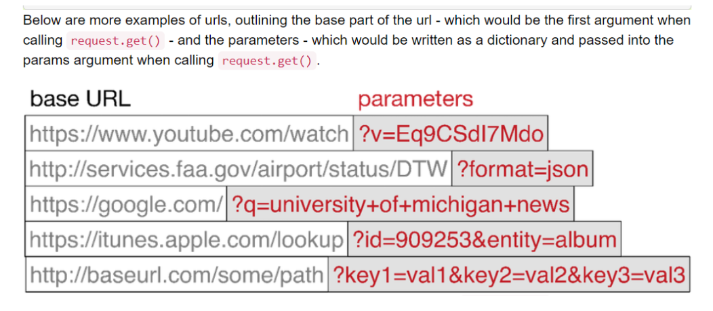

Data collection with Python
Contents
Data collection with Python¶
Nested Data¶
#list
nested_list = [['a', 'b', 'c'],['d', 'e'],['f', 'g', 'h']]
for l in nested_list:
print(l)
['a', 'b', 'c']
['d', 'e']
['f', 'g', 'h']
# dictionary
info = {'personal_data':
{'name': 'Lauren',
'age': 20,
'major': 'Information Science',
'physical_features':
{'color': {'eye': 'blue',
'hair': 'brown'},
'height': "5'8"}
},
'other':
{'favorite_colors': ['purple', 'green', 'blue'],
'interested_in': ['social media', 'intellectual property', 'copyright', 'music', 'books']
}
}
info['personal_data']['physical_features']['color']
{'eye': 'blue', 'hair': 'brown'}
JSON stands for JavaScript Object Notation. It looks a lot like the representation of nested dictionaries and lists in python when we write them out as literals in a program, but with a few small differences (e.g., the word null instead of None). When your program receives a JSON-formatted string, generally you will want to convert it into a python object, a list or a dictionary.
json.loads() takes a string as input and produces a python object (a dictionary or a list) as output.
json.dumps() does the inverse of loads. It takes a python object (a dictionary or a list) and returns a string in JSON format.
import json
a_string = '\n\n\n{\n "resultCount":25,\n "results": [\n{"wrapperType":"track", "kind":"podcast", "collectionId":10892}]}'
print(a_string)
d = json.loads(a_string)
print("------")
print(type(d)) #'dict'
print(d.keys())
print(d['resultCount'])
{
"resultCount":25,
"results": [
{"wrapperType":"track", "kind":"podcast", "collectionId":10892}]}
------
<class 'dict'>
dict_keys(['resultCount', 'results'])
25
def pretty(obj):
return json.dumps(obj, sort_keys=True, indent=2)
d = {'key1': {'c': True, 'a': 90, '5': 50}, 'key2':{'b': 3, 'c': "yes"}}
print(d)
print('--------')
print(pretty(d))
{'key1': {'c': True, 'a': 90, '5': 50}, 'key2': {'b': 3, 'c': 'yes'}}
--------
{
"key1": {
"5": 50,
"a": 90,
"c": true
},
"key2": {
"b": 3,
"c": "yes"
}
}
Nested Iteration¶
nested1 = [['a', 'b', 'c'],['d', 'e'],['f', 'g', 'h']]
for x in nested1:
print("level1: ")
for y in x:
print(" level2: " + y)
level1:
level2: a
level2: b
level2: c
level1:
level2: d
level2: e
level1:
level2: f
level2: g
level2: h
nested2 = [1, 2, ['a', 'b', 'c'],['d', 'e'],['f', 'g', 'h']]
for x in nested2:
print("level1: ")
if type(x) is list:
for y in x:
print(" level2: {}".format(y))
else:
print(x)
level1:
1
level1:
2
level1:
level2: a
level2: b
level2: c
level1:
level2: d
level2: e
level1:
level2: f
level2: g
level2: h
Deep and Shallow Copies¶
When you copy a nested list, you do not also get copies of the internal lists. This means that if you perform a mutation operation on one of the original sublists, the copied version will also change. We can see this happen in the following nested list, which only has two levels.
original = [['dogs', 'puppies'], ['cats', "kittens"]]
copied_version = original[:]
print(copied_version)
print(copied_version is original)
print(copied_version == original) #False
original[0].append(["canines"])
print(original)
print("-------- Now look at the copied version -----------")
print(copied_version)
[['dogs', 'puppies'], ['cats', 'kittens']]
False
True
[['dogs', 'puppies', ['canines']], ['cats', 'kittens']]
-------- Now look at the copied version -----------
[['dogs', 'puppies', ['canines']], ['cats', 'kittens']]
Assuming that you don’t want to have aliased lists inside of your nested list, then you’ll need to perform nested iteration.
Or equivalently, you could take advantage of the slice operator to do the copying of the inner list.
original = [['dogs', 'puppies'], ['cats', "kittens"]]
copied_outer_list = []
for inner_list in original:
copied_inner_list = []
for item in inner_list:
copied_inner_list.append(item)
copied_outer_list.append(copied_inner_list)
print(copied_outer_list)
original[0].append(["canines"])
print(original)
print("-------- Now look at the copied version -----------")
print(copied_outer_list)
[['dogs', 'puppies'], ['cats', 'kittens']]
[['dogs', 'puppies', ['canines']], ['cats', 'kittens']]
-------- Now look at the copied version -----------
[['dogs', 'puppies'], ['cats', 'kittens']]
original = [['dogs', 'puppies'], ['cats', "kittens"]]
copied_outer_list = []
for inner_list in original:
copied_inner_list = inner_list[:]
copied_outer_list.append(copied_inner_list)
print(copied_outer_list)
original[0].append(["canines"])
print(original)
print("-------- Now look at the copied version -----------")
print(copied_outer_list)
[['dogs', 'puppies'], ['cats', 'kittens']]
[['dogs', 'puppies', ['canines']], ['cats', 'kittens']]
-------- Now look at the copied version -----------
[['dogs', 'puppies'], ['cats', 'kittens']]
This process above works fine when there are only two layers or levels in a nested list. However, if we want to make a copy of a nested list that has more than two levels, then we recommend using the copy module. In the copy module there is a method called deepcopy that will take care of the operation for you.
import copy
original = [['canines', ['dogs', 'puppies']], ['felines', ['cats', 'kittens']]]
shallow_copy_version = original[:]
deeply_copied_version = copy.deepcopy(original)
original.append("Hi there")
original[0].append(["marsupials"])
print("-------- Original -----------")
print(original)
print("-------- deep copy -----------")
print(deeply_copied_version)
print("-------- shallow copy -----------")
print(shallow_copy_version)
-------- Original -----------
[['canines', ['dogs', 'puppies'], ['marsupials']], ['felines', ['cats', 'kittens']], 'Hi there']
-------- deep copy -----------
[['canines', ['dogs', 'puppies']], ['felines', ['cats', 'kittens']]]
-------- shallow copy -----------
[['canines', ['dogs', 'puppies'], ['marsupials']], ['felines', ['cats', 'kittens']]]
Map¶
def triple(value):
return 3*value
def tripleStuff(a_list):
new_seq = map(triple, a_list)
return list(new_seq)
def quadrupleStuff(a_list):
new_seq = map(lambda value: 4*value, a_list)
return list(new_seq)
things = [2, 5, 9]
things3 = tripleStuff(things)
print(things3)
things4 = quadrupleStuff(things)
print(things4)
[6, 15, 27]
[8, 20, 36]
things = [2, 5, 9]
things4 = map((lambda value: 4*value), things)
print(list(things4))
# or all on one line
print(list(map((lambda value: 5*value), [1, 2, 3])))
[8, 20, 36]
[5, 10, 15]
Filter¶
def keep_evens(nums):
new_list = []
for num in nums:
if num % 2 == 0:
new_list.append(num)
return new_list
print(keep_evens([3, 4, 6, 7, 0, 1]))
[4, 6, 0]
def keep_evens(nums):
new_seq = filter(lambda num: num % 2 == 0, nums)
return list(new_seq)
print(keep_evens([3, 4, 6, 7, 0, 1]))
[4, 6, 0]
List comprehension, an alternative way to do map and filter operations¶
things = [2, 5, 9]
yourlist = [value * 2 for value in things]
print(yourlist)
[4, 10, 18]
def keep_evens(nums):
new_list = [num for num in nums if num % 2 == 0]
return new_list
print(keep_evens([3, 4, 6, 7, 0, 1]))
[4, 6, 0]
ZIP¶
L1 = [3, 4, 5]
L2 = [1, 2, 3]
L3 = []
for i in range(len(L1)):
L3.append(L1[i] + L2[i])
print(L3)
[4, 6, 8]
L1 = [3, 4, 5]
L2 = [1, 2, 3]
L4 = list(zip(L1, L2))
print(L4)
[(3, 1), (4, 2), (5, 3)]
L1 = [3, 4, 5]
L2 = [1, 2, 3]
L3 = []
L4 = list(zip(L1, L2))
for (x1, x2) in L4:
L3.append(x1+x2)
print(L3)
[4, 6, 8]
L1 = [3, 4, 5]
L2 = [1, 2, 3]
L3 = [x1 + x2 for (x1, x2) in list(zip(L1, L2))]
print(L3)
[4, 6, 8]
def possible(word, blanked, guesses_made):
if len(word) != len(blanked):
return False
for i in range(len(word)):
bc = blanked[i]
wc = word[i]
if bc == '_' and wc in guesses_made:
return False
elif bc != '_' and bc != wc:
return False
return True
print(possible("wonderwall", "_on__r__ll", "otnqurl"))
print(possible("wonderwall", "_on__r__ll", "wotnqurl"))
True
False
Requesting Data from the Internet¶
The Internet is a transport mechanism that lets any connected device communicate with any other connected device. Behind the scenes:
Each device has a globally distinct IP address, which is a 32 bit number. Usually an IP address is represented as a sequence of four decimal numbers, each number in the range (0, 255). For example, when I checked the IP address for my laptop just now, it was 141.211.203.248. Any IP address beginning with 141.211 is for a device at the University of Michigan. When I take my laptop home and connect to a network there, my laptop gets a different IP address that it uses there.
Data is chopped up into reasonable sized packets (up to 65,535 bytes, but usually much smaller).
Each data packet has a header that includes the destination IP address.
Each packet is routed independently, getting passed on from one computing device to another until it reaches its destination. The computing devices that do that packet forwarding are called routers. Each router keeps an address table that says, when it gets a packet for some destination address, which of its neighbors should it pass the packet on to. The routers are constantly talking to each other passing information about how they should update their routing tables. The system was designed to be resistant to any local damage. If some of the routers stop working, the rest of the routers talk to each other and start routing packets around in a different way so that packets still reach their intended destination if there is some path to get there. It is this technical capability that has spawned metaphoric quotes like this one from John Gilmore: “The Net interprets censorship as damage and routes around it.”
At the destination, the packets are reassembled into the original data message.

Anatomy of URLs: <scheme>://<host>:<port>/<path>

The HTTP protocol¶
A protocol specifies the order in which parties will speak and the format of what they say and the content of appropriate responses.
HTTP is the protocol that specifies how web browsers or other programs communicate with web servers. One version of the formal specification, before it was later split into multiple documents, was IETF RFC 2616. It is 176 pages long! Fortunately, the basics are pretty easy to understand.
Step 1: the client makes a request to the server.
If the request only involves fetching data, the client sends a message of the form GET
If the request involves sending some data (e.g., a file upload, or some authentication information), the message starts with POST
In either case, the client sends some HTTP headers. These include: The type of client program. This allows the server to send back different things to small mobile devices than desktop browsers (a “responsive” website)
Any cookies that the server previously asked the client to hold onto. This allows the server to continue previous interactions, rather than treating every request as stand-alone. It also allows ad networks to place personalized ads.
After the HTTP headers, for a POST type communication, there is some data (the body of the request).
Step 2: the server responds to the client. The server first sends back some HTTP headers. These include: a response code indicating whether the server thinks it has fulfilled the request or not.
a description of the type of content it is sending back (e.g., text/html when it is sending html-formatted text).
any cookies it would like the client to hold onto and send back the next time it communicates with the server.
After the headers come the contents. This is the stuff that you would see if you ask to “View Source” in a browser.
Using REST APIs¶
REST stands for REpresentational State Transfer. It originally had a more abstract meaning, but has come to be a shorthand name for web sites that act a bit like python functions, taking as inputs values for certain parameters and producing outputs in the form of a long text string.
API stands for Application Programming Interface. An API specifies how an external program (an application program) can request that a program perform certain computations.
Putting the two together, a REST API specifies how external programs can make HTTP requests to a web site in order to request that some computation be carried out and data returned as output. When a website is designed to accept requests generated by other computer programs, and produce outputs to be consumed by other programs, it is sometimes called a web service, as opposed to a web site which produces output meant for humans to consume in a web browser.
In this format, the URL has a standard structure:
the base URL
a ? character
one or more key-value pairs, formatted as key=value pairs and separated by the & character.

Fetching in python with requests.get¶
import requests
import json
page = requests.get("https://api.datamuse.com/words?rel_rhy=funny")
print(type(page))
print(page.text[:150]) # print the first 150 characters
print(page.url) # print the url that was fetched
print("------")
x = page.json() # turn page.text into a python object
print(type(x))
print("---first item in the list---")
print(x[0])
print("---the whole list, pretty printed---")
print(json.dumps(x, indent=2)) # pretty print the results
<class 'requests.models.Response'>
[{"word":"money","score":4415,"numSyllables":2},{"word":"honey","score":1206,"numSyllables":2},{"word":"sunny","score":717,"numSyllables":2},{"word":"
https://api.datamuse.com/words?rel_rhy=funny
------
<class 'list'>
---first item in the list---
{'word': 'money', 'score': 4415, 'numSyllables': 2}
---the whole list, pretty printed---
[
{
"word": "money",
"score": 4415,
"numSyllables": 2
},
{
"word": "honey",
"score": 1206,
"numSyllables": 2
},
{
"word": "sunny",
"score": 717,
"numSyllables": 2
},
{
"word": "bunny",
"score": 702,
"numSyllables": 2
},
{
"word": "blini",
"score": 613,
"numSyllables": 2
},
{
"word": "gunny",
"score": 449,
"numSyllables": 2
},
{
"word": "tunny",
"score": 301,
"numSyllables": 2
},
{
"word": "sonny",
"score": 286,
"numSyllables": 2
},
{
"word": "dunny",
"score": 245,
"numSyllables": 2
},
{
"word": "runny",
"score": 225,
"numSyllables": 2
},
{
"word": "thunny",
"score": 222,
"numSyllables": 2
},
{
"word": "aknee",
"score": 179,
"numSyllables": 2
},
{
"word": "squinny",
"score": 170,
"numSyllables": 2
},
{
"word": "fiat money",
"score": 160,
"numSyllables": 4
},
{
"word": "gunnie",
"score": 156,
"numSyllables": 2
},
{
"word": "blood money",
"score": 152,
"numSyllables": 3
},
{
"word": "squiny",
"score": 151,
"numSyllables": 2
},
{
"word": "tunney",
"score": 119,
"numSyllables": 2
},
{
"word": "spinny",
"score": 117,
"numSyllables": 2
},
{
"word": "pin money",
"score": 107,
"numSyllables": 3
},
{
"word": "easy money",
"score": 66,
"numSyllables": 4
},
{
"word": "smart money",
"score": 66,
"numSyllables": 3
},
{
"word": "earnest money",
"score": 62,
"numSyllables": 4
},
{
"word": "easter bunny",
"score": 56,
"numSyllables": 4
},
{
"word": "paper money",
"score": 54,
"numSyllables": 4
},
{
"word": "pocket money",
"score": 47,
"numSyllables": 4
},
{
"word": "folding money",
"score": 46,
"numSyllables": 4
},
{
"word": "conscience money",
"score": 41,
"numSyllables": 4
},
{
"word": "hush money",
"score": 40,
"numSyllables": 3
},
{
"word": "prize money",
"score": 37,
"numSyllables": 3
},
{
"word": "amount of money",
"score": 33,
"numSyllables": 5
},
{
"word": "for love or money",
"score": 32,
"numSyllables": 5
},
{
"word": "tight money",
"score": 32,
"numSyllables": 3
},
{
"word": "ship money",
"score": 30,
"numSyllables": 3
},
{
"word": "metal money",
"score": 27,
"numSyllables": 4
},
{
"word": "sum of money",
"score": 23,
"numSyllables": 4
},
{
"word": "entrance money",
"score": 22,
"numSyllables": 4
},
{
"word": "cheap money",
"score": 21,
"numSyllables": 3
},
{
"word": "spending money",
"score": 21,
"numSyllables": 4
},
{
"word": "token money",
"score": 21,
"numSyllables": 4
},
{
"word": "waste of money",
"score": 19,
"numSyllables": 4
},
{
"word": "ransom money",
"score": 18,
"numSyllables": 4
},
{
"word": "hearth money",
"score": 14,
"numSyllables": 3
},
{
"word": "munni",
"score": 14,
"numSyllables": 2
},
{
"word": "bunnie",
"score": 2,
"numSyllables": 2
},
{
"word": "euromoney",
"score": 2,
"numSyllables": 4
},
{
"word": "smartmoney",
"score": 2,
"numSyllables": 3
}
]
d = {'q': '"violins and guitars"', 'tbm': 'isch'}
results = requests.get("https://google.com/search", params=d)
print(results.url)
https://www.google.com/search?q=%22violins+and+guitars%22&tbm=isch

How to use a REST API¶
Suppose you have learned about the existence of an API, and want to figure out how to use it. There are five questions that you’ll need to answer.
What is the baseurl?
What keys should you provide in the dictionary you pass for the params parameter?
What values should you provide associated with those keys?
Do you need to authenticate yourself as a licensed user of the API and, if so, how?
What is the structure and meaning of the data that will be provided?
The answers to these questions always depend on design choices made by the service provider who is running the server. Thus, the official documentation they provide will usually be the most helpful. It may also be helpful to find example code snippets or full URLs and responses; if you don’t find that in the documentation, you may want to search for it on Google or StackOverflow.
Caching Response Content¶
import requests
import json
PERMANENT_CACHE_FNAME = "permanent_cache.txt"
TEMP_CACHE_FNAME = "this_page_cache.txt"
def _write_to_file(cache, fname):
with open(fname, 'w') as outfile:
outfile.write(json.dumps(cache, indent=2))
def _read_from_file(fname):
try:
with open(fname, 'r') as infile:
res = infile.read()
return json.loads(res)
except:
return {}
def add_to_cache(cache_file, cache_key, cache_value):
temp_cache = _read_from_file(cache_file)
temp_cache[cache_key] = cache_value
_write_to_file(temp_cache, cache_file)
def clear_cache(cache_file=TEMP_CACHE_FNAME):
_write_to_file({}, cache_file)
def make_cache_key(baseurl, params_d, private_keys=["api_key"]):
"""Makes a long string representing the query.
Alphabetize the keys from the params dictionary so we get the same order each time.
Omit keys with private info."""
alphabetized_keys = sorted(params_d.keys())
res = []
for k in alphabetized_keys:
if k not in private_keys:
res.append("{}-{}".format(k, params_d[k]))
return baseurl + "_".join(res)
def get(baseurl, params={}, private_keys_to_ignore=["api_key"], permanent_cache_file=PERMANENT_CACHE_FNAME, temp_cache_file=TEMP_CACHE_FNAME):
full_url = requests.requestURL(baseurl, params)
cache_key = make_cache_key(baseurl, params, private_keys_to_ignore)
# Load the permanent and page-specific caches from files
permanent_cache = _read_from_file(permanent_cache_file)
temp_cache = _read_from_file(temp_cache_file)
if cache_key in temp_cache:
print("found in temp_cache")
# make a Response object containing text from the change, and the full_url that would have been fetched
return requests.Response(temp_cache[cache_key], full_url)
elif cache_key in permanent_cache:
print("found in permanent_cache")
# make a Response object containing text from the change, and the full_url that would have been fetched
return requests.Response(permanent_cache[cache_key], full_url)
else:
print("new; adding to cache")
# actually request it
resp = requests.get(baseurl, params)
# save it
add_to_cache(temp_cache_file, cache_key, resp.text)
return resp
%%script false --no-raise-error
#Above can be turned into a package to use.
import request_with_caching
# it's not found in the permanent cache
res = requests_with_caching.get("https://api.datamuse.com/words?rel_rhy=happy", permanent_cache_file="datamuse_cache.txt")
print(res.text[:100])
# this time it will be found in the temporary cache
res = requests_with_caching.get("https://api.datamuse.com/words?rel_rhy=happy", permanent_cache_file="datamuse_cache.txt")
# This one is in the permanent cache.
res = requests_with_caching.get("https://api.datamuse.com/words?rel_rhy=funny", permanent_cache_file="datamuse_cache.txt")
Couldn't find program: 'false'
%%script false
import requests_with_caching
import json
parameters = {"term": "Ann Arbor", "entity": "podcast"}
iTunes_response = requests_with_caching.get("https://itunes.apple.com/search", params = parameters, permanent_cache_file="itunes_cache.txt")
py_data = json.loads(iTunes_response.text)
for r in py_data['results']:
print(r['trackName'])
Couldn't find program: 'false'
%%script false
# import statements
import requests_with_caching
import json
# import webbrowser
# apply for a flickr authentication key at http://www.flickr.com/services/apps/create/apply/?
# paste the key (not the secret) as the value of the variable flickr_key
flickr_key = 'yourkeyhere'
def get_flickr_data(tags_string):
baseurl = "https://api.flickr.com/services/rest/"
params_diction = {}
params_diction["api_key"] = flickr_key # from the above global variable
params_diction["tags"] = tags_string # must be a comma separated string to work correctly
params_diction["tag_mode"] = "all"
params_diction["method"] = "flickr.photos.search"
params_diction["per_page"] = 5
params_diction["media"] = "photos"
params_diction["format"] = "json"
params_diction["nojsoncallback"] = 1
flickr_resp = requests_with_caching.get(baseurl, params = params_diction, permanent_cache_file="flickr_cache.txt")
# Useful for debugging: print the url! Uncomment the below line to do so.
print(flickr_resp.url) # Paste the result into the browser to check it out...
return flickr_resp.json()
result_river_mts = get_flickr_data("river,mountains")
# Some code to open up a few photos that are tagged with the mountains and river tags...
photos = result_river_mts['photos']['photo']
for photo in photos:
owner = photo['owner']
photo_id = photo['id']
url = 'https://www.flickr.com/photos/{}/{}'.format(owner, photo_id)
print(url)
# webbrowser.open(url)
Couldn't find program: 'false'
Sometimes, you may need to deal with text that includes characters that are not part of the standard English alphabet, such as é, ö, Ф, or ¥. This is especially likely if you use REST APIs to fetch user-contributed content from social media sites like Twitter, Facebook, or flickr.
Python’s strings are in unicode, which allows for characters to be from a much larger alphabet, including more than 75,000 ideographic characters used in Chinese, Japanese, and Korean alphabets. Everything works fine inside Python, for operations like slicing and appending and concatenating strings and using .find() or the in operator.
Things only get tricky when you want to input strings into Python, or print them to an output window or write them to a file.
For output, your terminal (output) window will typically be set up to display characters only from a restricted set of languages (perhaps just English). If you issue a print statement on a string containing other characters, it may not display correctly in your terminal window. Indeed, you may get an error message. We will offer a workaround later on this page.
If you want to store unicode text in a file, you have to choose an “encoding”. This is analogous to the encoding of special characters in a URL string, but not the same. In a file, each unicode character has to be encoded as one or more “bytes” for storage in a file. We have avoided low-level details about data encodings until now, but understanding a little about bits and bytes will help make sense of this.
A bit is a BInary digiT. It is a single value restricted to two (binary) possibilities, which we conventionally write as 0 or 1. Computers store bits as electrical charges (high or low voltage) or as magnetic polarities, or some other way that we need not be concerned about. A sequence of eight 0-1 bits is called a byte. For example: 01001000.
There are 2^^8=256 distinct eight-bit bytes. If we only had 256 possible letters in our alphabet, we could simply encode each letter as one of the available bytes. When we restrict ourselves to regular python strings, using only the ASCII alphabet (English, plus a few special characters), the encoding is that simple, so simple that we haven’t had to think about it before.
When there are 75,000 possible characters, they can’t all be encoded with a single byte, because there are only 256 distinct bytes (eight-bit sequences). There are many possible encodings. The one you will be most likely to encounter, using REST APIs, is called UTF-8. A single unicode character is mapped to a sequence of up to four bytes.
If you read in a UTF-8 encoded text, and get the contents using .read() or .readlines(), you will need to “decode” the contents in order to turn it into a proper unicode string that you can read and use.
Fortunately, the requests module will normally handle this for us automatically. When we fetch a webpage that is in json format, the webpage will have a header called ‘content-type’ that will say something like application/json; charset=utf8. If it specifies the utf8 character set in that way, the requests module will automatically decode the contents into unicode: requests.get(‘that web page’).text will yield a string, with each of those sequences of one to four bytes coverted into a single character.
If, for some reason, you get json-formatted text that is utf-encoded but the requests module hasn’t magically decoded it for you, the json.loads() function call can take care of the decoding for you. loads() takes an optional parameter, encoding. Its default value is ‘utf-8’, so you don’t need to specify it unless you think the text you have received was in some other encoding than ‘utf-8’.
Note
You may see a u before the string in a Python 2.7 program indicating that it’s a unicode string. In Python 3, all strings are unicode strings, so you shouldn’t encounter any of those strange u characters in this textbook.
Once you have python strings, everything will work fine until you try to print or write the contents to a file. If you print, and your terminal window is not set up to display that language, you may get a strange output, or an error message.
If you try to write to a file with unicode strings, you may get an error. When you write a unicode string to a file, Python tries to encode it in ASCII. If there is a non-ASCII character, the execution fails and raises an error that looks like this: UnicodeEncodeError: ‘ascii’ codec can’t encode character u’\xea’ in position 1: ordinal not in range(128).
One solution is to use the Python method to encode the string, using a format such as utf-8. For example, s.encode(‘utf-8’) will encode string s as utf-8. That will encode non-ASCII characters with multiple character sequences that are difficult for people to read but can decoded back into single Unicode characters. This is often the best way.
Another quick-and-dirty option, if you just have a few stray characters that are getting in your way, is to replace any non-ASCII characters with question marks. For example, s.encode(‘ascii’, ‘replace’). Of course, replacing characters with question marks destroys some of the information, but it may be helpful in some circumstances.
Note
In the Runestone online environment, the .encode() and .decode() methods are not available for strings. You can only use them in a full python environment. In all of the cached data that we provide from REST APIs in this online book, we have tried to avoid Unicode encoding issues.
Google Places API¶
import requests
# You need to install the requests module to use this code
import json
api_key = False
# If you have a Google Places API key, enter it here
# api_key = 'AIzaSy___IDByT70'
# https://developers.google.com/maps/documentation/geocoding/intro
if api_key is False:
api_key = 42
serviceurl = 'http://py4e-data.dr-chuck.net/json'
else :
serviceurl = 'https://maps.googleapis.com/maps/api/geocode/json'
while True:
address = input('Enter location: ')
if len(address) < 1: break
payload = dict()
payload['address'] = address
if api_key is not False: payload['key'] = api_key
r = requests.get(serviceurl, params=payload)
print('Retrieved', r.url)
data = r.text
print('Retrieved', len(data), 'characters')
try:
js = json.loads(data)
except:
js = None
if not js or 'status' not in js or js['status'] != 'OK':
print('==== Failure To Retrieve ====')
print(data)
continue
print(json.dumps(js, indent=4))
lat = js['results'][0]['geometry']['location']['lat']
lng = js['results'][0]['geometry']['location']['lng']
print('lat', lat, 'lng', lng)
location = js['results'][0]['formatted_address']
print(location)
---------------------------------------------------------------------------
StdinNotImplementedError Traceback (most recent call last)
C:\Users\EMMA~1.ZHA\AppData\Local\Temp/ipykernel_18820/1008616464.py in <module>
15
16 while True:
---> 17 address = input('Enter location: ')
18 if len(address) < 1: break
19
~\AppData\Local\Packages\PythonSoftwareFoundation.Python.3.9_qbz5n2kfra8p0\LocalCache\local-packages\Python39\site-packages\ipykernel\kernelbase.py in raw_input(self, prompt)
1001 """
1002 if not self._allow_stdin:
-> 1003 raise StdinNotImplementedError(
1004 "raw_input was called, but this frontend does not support input requests."
1005 )
StdinNotImplementedError: raw_input was called, but this frontend does not support input requests.